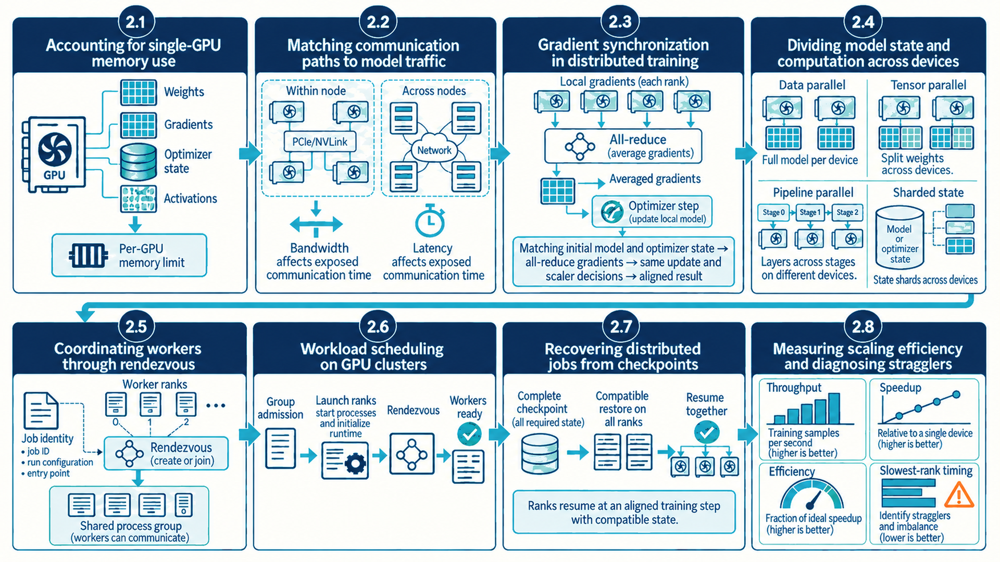
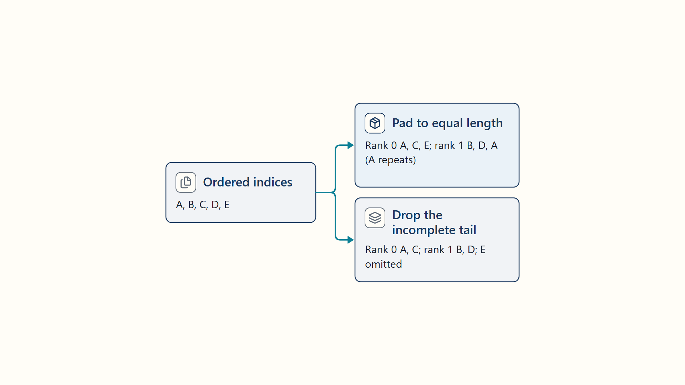
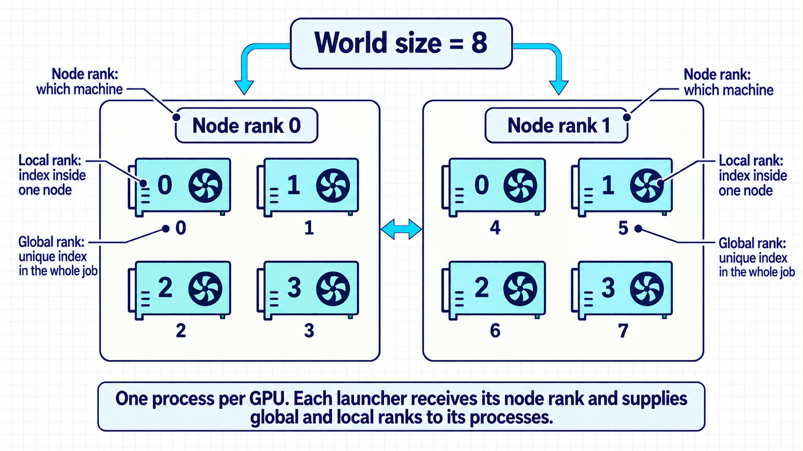

2 Scaling training and recovering from interruptions
How can one training job use many GPUs without turning communication, scheduling, or failure into the real bottleneck? Chapter 1 defined the versioned artifacts and software layers around a run. Single-GPU limits lead to network and process identities, then to recoverable distributed execution and measurement.
Chapter map: distributed cluster training
The sections answer four linked questions:
- 2.1–2.2: Which state does not fit on one device, and which links must carry the resulting traffic?
- 2.3–2.4: How do replicas synchronize updates, and how can state, layers, and activations be divided or reduced across devices?
- 2.5–2.6: How does the system identify and admit the full worker group?
- 2.7–2.8: Which checkpoint can restore the run, and which measurements reveal lost useful work?

2.1 Accounting for single-GPU memory use
A reproducible run can still be physically impossible on one device. Model state, optimizer state, and activations must fit before the run can finish in an acceptable time. The memory breakdown helps identify whether to divide stored model state across devices, split computation, or reduce memory used by activations. The choice also depends on communication cost and the total memory needed.
Device: One accelerator visible to a training process, such as one NVIDIA GPU.
Server or node: One physical or virtual machine containing CPUs, host memory, storage interfaces, networking, and one or more devices.
One batch shows why training needs several kinds of memory. The training loop passes an input through the model to produce a prediction in a forward pass. It compares that prediction with a known target, works backward to find how the adjustable numbers affected the error, and uses an optimizer to update those numbers for the next batch. A Model layer is a computation stage that transforms inputs into outputs. The objects in this cycle have distinct roles:
- Parameter (weight): An adjustable number in the model that changes during training.
- Loss: A number measuring the prediction against the target for this batch.
- Gradient: The rate at which the loss changes with a weight. Backpropagation computes it by working backward through the operations that produced the loss.
- Optimizer: An update rule that uses gradients, settings, and possibly saved state to change the weights.
- Activation: An intermediate layer output produced during a forward pass in training or inference. Training can retain these outputs for backpropagation until they are no longer needed.
- Batch: The examples processed together before one model update.
- Micro-batch: A smaller part of a batch processed at one time to fit memory or flow through pipeline stages. Several micro-batches can contribute to one update.
For a separate update on the next batch, the training loop clears previous gradients first. With deliberate Gradient accumulation, several micro-batches contribute gradients to one update. The loop clears them after applying that update.1
For a small example, suppose a one-weight model multiplies input 3 by weight 2 and aims for target 7. Its prediction is 6, and the squared-error loss \((6-7)^2\) is 1. For squared error, the local loss-change rate with respect to the prediction is twice the prediction error, \(2(6-7)=-2\). The prediction changes by 3 times a small weight change because the input is 3. Backpropagation combines these two rates. The resulting weight gradient is \(-2\times3=-6\). The negative gradient means that a small increase in the weight lowers the loss locally. Gradient descent subtracts a chosen multiple of the gradient from the weight. That multiple is the Learning rate. Here it is 0.1, so the optimizer changes the weight from 2 to \(2-0.1(-6)=2.6\). On the same input, its next prediction is 7.8 and loss is 0.64. This scalar example shows the order and effect of one update, not the arithmetic of Adam or evidence of generalization. Adam is an optimizer that uses a running first moment, an estimate of the average gradient, and a second moment, an estimate of the average squared gradient, to choose its update.2 The weight, backward gradient, temporary activations, and Adam moments are distinct memory objects with different roles in the training step.
\[ M_{\mathrm{train}} ≈ P\left(b_w + b_g + b_{\mathrm{master}} + b_{\mathrm{opt}}\right) + A \tag{2.1}\]
\(M_{\mathrm{train}}\) is the estimated training-memory total, and \(P\) is the parameter count. The terms \(b_{\mathrm{w}}\), \(b_{\mathrm{g}}\), \(b_{\mathrm{master}}\), and \(b_{\mathrm{opt}}\) give bytes per parameter for weights, gradients, master weights, and optimizer state. \(A\) is activation memory in bytes. The persistent subtotal assumes one stated precision and optimizer layout. Temporary activations vary with the model and batch shape, so a profiler or shape-based estimate must add their memory after that subtotal. A Floating-point format represents numbers with limited precision, so some values are rounded. The following example assumes mixed-precision training: arithmetic uses the 16-bit floating-point format BF16 to reduce memory and bandwidth, while a master copy of each weight uses the 32-bit floating-point format FP32. Optimizer updates change the master copy so small changes are less likely to round away. This is one possible layout, not a requirement of all mixed-precision training.3
Example: memory for an 8-billion-parameter model with Adam optimizer
This illustrative layout assumes BF16 weights and gradients, FP32 master weights, and two FP32 Adam moments. Sizes use decimal GB. Other mixed-precision implementations can use different persistent layouts:4
- Weights: Eight billion BF16 weights at 2 bytes each require 16 GB.
- Gradients: BF16 gradients add 16 GB.
- Master weights: Eight billion FP32 master weights at 4 bytes each add 32 GB.
- Adam state: Two FP32 moment buffers use 8 bytes per parameter and add 64 GB.
- Persistent subtotal: Weights, gradients, master weights, and Adam state total 128 GB before activations, temporary buffers, and allocator reserve.
- Activations: For illustration, 40 GB with a small micro-batch gives about 168 GB total, while 160 GB with a longer sequence or larger micro-batch gives about 288 GB. A profiler or shape-based activation estimate supplies the value for a real run.
- Scale: Repeating the same 16-bytes-per-parameter accounting gives persistent-state subtotals of 1.12 TB for 70 billion parameters and 6.48 TB for 405 billion. With illustrative activation allowances of 0.3–1.4 TB and 1.5–8 TB, the rough totals become 1.4–2.5 TB and 8–14.5 TB. These ranges are planning estimates, not fixed device-capacity requirements.
- Conclusion: A model with 8 billion parameters that is easy to load for inference can require multiple high-memory GPUs for ordinary Adam training.
The second limit is elapsed time. Data parallelism replicates computation over different input shards, the portions of the dataset assigned to separate workers, and synchronizes model updates. It can increase sample or token throughput when useful work outweighs communication and synchronization cost. At fixed global batch size this is a time-per-step comparison. Increasing global batch size can change convergence, so throughput alone does not establish time to a target quality. Model sharding addresses memory. Data replication addresses throughput. Large jobs often combine both.
2.2 Matching communication paths to model traffic
A run that uses several devices also needs to move data between them.
Distributed training uses four different kinds of technology:
- Physical fabric: PCIe, NVLink/NVSwitch, InfiniBand, RoCE, or Ethernet moves bytes between devices or nodes.
- Communication library (
backend):NCCLimplements group communication operations on GPUs and selects supported transport paths5, while Gloo or MPI cover other process and data patterns. - PyTorch API:
torch.distributedcreates process groups and exposes collectives toPyTorchcode. - Parallelism strategy: Specifies how model state and computation are distributed across devices.
The communication API requests operations that involve a group of processes:
- Collective operation: A group communication operation in which processes participate according to a shared rule. That rule determines which ranks contribute data and which receive results. For example, reduce returns a combined result to one destination process, while all-reduce returns it to every participating process.
- All-reduce: A collective that combines one value from every process, usually by summation, and returns the combined result to every process.
NVLink is a high-bandwidth GPU interconnect whose domain can span one or multiple servers.6 NCCL is a software library that may use NVLink, InfiniBand, RoCE, or sockets. torch.distributed is the PyTorch API that requests collective operations from the configured backend.
| Connection type | Typical scope | Why placement matters |
|---|---|---|
| PCIe / NVLink / NVSwitch | High-bandwidth domain. NVLink can span multiple servers | Tensor-parallel communication can occur every layer and needs very high bandwidth. |
| InfiniBand / RoCE | Between servers | Data, pipeline, or context groups exchange gradients or activations across nodes. |
| Ethernet sockets | Control or fallback data path | Transfer time depends on tensor size and measured bandwidth. The delay to a synchronized step depends on how much of that transfer can run alongside computation. |
Tensor parallelism splits each layer’s weight matrices across several GPUs, so those GPUs must exchange partial results inside every layer. The example below places one such group on fast links. Rank is each process’s unique integer identity within that group. Section 2.4 works through the matrix split.
Device placement example: placing a tensor-parallel group across fast interconnects
Placing frequently communicating ranks on faster links can reduce exposed communication time:
- Tensor payload: Four tensor-parallel ranks exchange layer outputs on nearly every transformer layer.7
- Fast local fabric: One server contains four GPUs connected through NVLink or NVSwitch, so the group remains inside that server.
- Across servers: In this simplified steady-state replicated data-parallel example, the larger data-parallel group uses InfiniBand or RoCE for gradient synchronization. Initialization and buffer broadcasts also communicate, and sharded strategies also exchange parameters.
- Failure signal: If a tensor-parallel rank is placed across ordinary Ethernet, per-layer collective time can rise and delay downstream stages.
- Conclusion: Communication frequency and payload size determine which parallel group benefits most from the most suitable available link.
2.3 Gradient synchronization in distributed training
The simplest scaling baseline is a full model replica on each device, with one consistent update shared across replicas. Each replica follows the Section 2.1 input, prediction, loss, and backward cycle on a different batch shard. It synchronizes the resulting gradients before its optimizer updates the weights.
- Distributed Data Parallel (DDP): A replicated-model strategy in which each process trains on a distinct batch shard and synchronizes gradients before applying the same optimizer update.
A DDP process owns one model replica and usually one GPU. A DistributedSampler assigns rank-specific indices to a dataset that supports integer-index lookup and reports its length. Every rank must use the same dataset size and base index order, and the same sampler shuffle seed. Each index then identifies the same base sample before any random transform. An IterableDataset streams samples without this index contract and needs its own rank-and-worker partitioning. With its default drop_last=False, it pads uneven dataset sizes and can repeat indices across ranks. Setting sampler drop_last=True omits a tail instead. This policy differs from dropping a final incomplete DataLoader batch.8 An Epoch is one pass through the dataset under the sampler’s selected index policy. DDP collects parameter gradients into buckets. A Gradient bucket is a group of parameter gradients transferred together. During backpropagation, DDP launches an asynchronous all-reduce as soon as a bucket is ready.9 Overlap hides some communication behind the remaining backward computation.
\[ g_{\mathrm{global}} = \frac{\sum_{r=0}^{N-1} g_r}{N} \tag{2.2}\]
\(g_{\mathrm{global}}\) is the averaged gradient component used by every replica. \(g_r\) is rank \(r\)’s contribution, with \(r\) running from zero through \(N-1\). World size is the total number of participating processes in this group, denoted here by \(N\). This unweighted average assumes every rank contributes an equal-sized effective batch.
Some mixed-precision runs use a Gradient scaler, a component that helps preserve small gradients in FP16, another 16-bit floating-point format. It multiplies the loss before backpropagation so the gradients are scaled too, then unscales them before the optimizer update. It adjusts the scale and can skip an update when gradients contain infinities or invalid numerical values. Replicas need matching scale and update decisions when a scaler is used.10
Example: gradient all-reduce across four ranks
Each local value is one rank’s gradient contribution. The synchronized average becomes the optimizer input used by every rank:
- Local values: The same bucket component is 0.8, 1.2, 1.0, and 1.4 on ranks 0 through 3.
- Reduction: All-reduce sums the four values to 4.4.
- Average: Dividing by the world size, 4, produces a synchronized component value of 1.1.
- Update state: Every replica receives 1.1 before applying the optimizer step, and parameters remain aligned if initial model and optimizer states, update schedules, and scaler decisions also match.
- Conclusion: Distinct data shards may produce different local gradients. Synchronization makes the optimizer input identical on every replica.
The equation does not require every implementation to perform a literal gather followed by division. Ring, tree, or hierarchical collective algorithms can produce the same result with different communication schedules.11
\[ B_{\mathrm{ring}} ≈ \frac{2 \cdot \left(N-1\right)}{N} \cdot G \tag{2.3}\]
\(B_{\mathrm{ring}}\) is the approximate number of bytes one rank sends for the two ring phases, \(N\) is the number of ranks, and \(G\) is the gradient-bucket size in bytes. The same amount is received separately. These per-rank traffic amounts must be combined with bandwidth and overlap to estimate delay.
Example: ring all-reduce traffic for eight ranks
A ring arranges ranks in a cycle, with each rank passing chunks to its neighbor. Reduce-scatter combines contributions so each rank ends with one summed chunk of the bucket. All-gather then circulates those summed chunks until every rank has the full result. For N ranks, each phase takes N - 1 chunk-transfer rounds per rank, with G / N bytes sent in each round. Each phase therefore sends (N - 1) / N of a bucket of size G. The factor of two counts both phases. The calculation below gives the bytes sent by one rank:
- Gradient bucket: The synchronized bucket is 1 GB.
- Rank count: Eight ranks participate.
- Traffic: 2 × (8 - 1) ÷ 8 × 1 GB = 1.75 GB sent per rank, with another 1.75 GB received per rank.12
- Interpretation: That transfer repeats for many buckets each step. Effective fabric bandwidth and overlap determine the exposed delay.
- Conclusion: A compute-light model can become communication-bound even when every GPU reports activity.

Code example: Abbreviated DDP sketch. The loader yields matching inputs and targets. Uneven datasets can repeat indices under default sampler padding. The launcher supplies identities and training code initializes the group.
import os
import torch
import torch.distributed as dist
from torch.nn.parallel import DistributedDataParallel as DDP
from torch.utils.data import DataLoader, DistributedSampler
dist.init_process_group(backend="nccl")
local_rank = int(os.environ["LOCAL_RANK"])
torch.cuda.set_device(local_rank)
model = DDP(build_model().cuda(local_rank), device_ids=[local_rank])
criterion = build_criterion()
optimizer = build_optimizer(model.parameters())
sampler = DistributedSampler(dataset, shuffle=True)
loader = DataLoader(dataset, sampler=sampler, batch_size=micro_batch)
for epoch in range(epochs):
sampler.set_epoch(epoch)
for inputs, targets in loader:
predictions = model(inputs.cuda(local_rank))
loss = criterion(predictions, targets.cuda(local_rank))
loss.backward()
optimizer.step()
optimizer.zero_grad(set_to_none=True)Code walkthrough: PyTorch DDP training step
This abbreviated example assumes that the data loader yields matching inputs and targets, the model returns predictions, and the criterion returns one scalar loss. The distributed training loop then coordinates rank processes and gradient synchronization:
- Process group:
init_process_groupinitializes the training process group using identities and connection settings supplied by the launcher. - Device assignment:
LOCAL_RANKbinds this process and its model replica to one GPU on the node. - Data partition:
DistributedSamplerapplies the padding or dropping policy described above, andset_epochchanges the shuffle between epochs. Strict non-overlap requires an appropriate dataset-size and sampler policy. - Loss contract: The model turns
inputsinto predictions, and the criterion compares them withtargetsbeforeloss.backward()begins DDP gradient synchronization. - Synchronization point:
loss.backward()activates DDP bucket hooks, andoptimizer.step()consumes the reduced gradients after the required collectives finish.
- Result: Ranks compute on their assigned indices and, under aligned optimizer state, apply the same synchronized update.
- Limits: The compact loop omits mixed precision, gradient accumulation, checkpointing, validation, failure handling, and a sampler configuration for uneven dataset sizes.
2.4 Dividing model state and computation across devices
DDP can increase throughput when a full training replica fits on each device. If persistent state or activations do not fit, the next choice depends on which object uses too much memory and how much added communication the hardware can support.
The strategies address different memory and sequence limits:
- Zero Redundancy Optimizer (ZeRO): A staged model-state sharding method that first shards optimizer state, then gradients, then parameters across data-parallel ranks. At stage 3 (ZeRO-3), it and Fully Sharded Data Parallel (FSDP) shard parameters, gradients, and optimizer state, gathering parameter shards when the configured module or parameter group executes. FSDP2 resharding policy controls how long gathered parameters remain on a device, and activation memory remains a separate cost.13
- Tensor parallelism: splits matrix operations across devices and communicates partial results within each layer.
- Pipeline parallelism places consecutive layer groups on stages and streams micro-batches through them.14
- Sequence parallelism partitions selected activation operations alongside tensor parallelism. In the Megatron Bridge implementation described here, this requires tensor parallelism across more than one device (
tensor_model_parallel_size > 1). Attention combines information from selected sequence positions to compute intermediate output values for each token in a transformer. Context parallelism distributes those sequence positions and their attention work across devices. They are related but different settings in Megatron terminology.15 - Expert parallelism places the specialized sub-networks of a Mixture-of-Experts layer on different devices. A router selects a subset of these sub-networks, called experts, for each token.16
FSDP reduces replicated state but increases parameter communication. Tensor parallelism reduces per-device matrix state but adds frequent collective operations. Pipeline parallelism stores fewer layers on each device but adds idle time when stages wait. Context and expert parallelism add workload-specific routing and balance problems. Measurements of the simpler baseline help identify which memory or throughput limit a combined strategy should address.
Tensor parallelism divides the arithmetic inside a layer. Consider a transformer feed-forward block whose first weight matrix has shape 4,096 × 16,384. The matrix maps 4,096 input numbers to 16,384 intermediate output numbers: each output is a weighted sum of the inputs, using one matrix column. The input is available on all four GPUs in this example. Between the two matrix operations, the block transforms each intermediate number locally. This split needs no exchange for that step. With four-way tensor parallelism, each GPU stores a 4,096 × 4,096 column slice of that matrix and computes its slice of the intermediate output without talking to the others. The second matrix maps those 16,384 intermediate numbers back to 4,096 outputs. It is split by rows: each GPU uses the 4,096 intermediate numbers it computed and its matching 4,096 × 4,096 row slice, producing a partial sum for every final output, and one all-reduce adds the four partial sums before the next layer.17 Each GPU therefore stores a quarter of the block’s weights, but the group communicates in every layer of every step. That frequency is why Section 2.2 keeps a tensor-parallel group inside one NVLink domain.
Pipeline parallelism divides the layers instead. Stage 1 runs the first group of layers, stage 2 the next group, and each later stage continues the sequence. Each global batch is cut into smaller micro-batches that flow through the stages. At the start of the forward pass, stage 2 cannot begin until stage 1 finishes the first micro-batch. At the end of that pass, stage 1 is idle while later stages finish it. The backward pass follows dependencies in the reverse direction. Pipeline bubble is the idle time as a stage waits for work to arrive or later stages to finish.
\[ \beta_{\mathrm{bubble}} \approx \frac{p-1}{m+p-1} \tag{2.4}\]
\(\beta_{\mathrm{bubble}}\) is the fraction of the schedule in which a stage is idle, \(p\) is the number of pipeline stages, and \(m\) is the number of micro-batches per global batch. The approximation comes from the GPipe schedule and assumes equal stage times without communication delay.18 With 4 stages and 4 micro-batches, the bubble is 3 ÷ 7 \(\approx\) 43% of the schedule. Raising the count to 16 micro-batches reduces it to 3 ÷ 19 \(\approx\) 16%. For a fixed global batch, more micro-batches shrink the bubble, but each one is smaller and can reduce the arithmetic rate of a GPU kernel, a GPU function that performs part of the numerical work. The effect depends on the dimensions of its arrays and the function used. The schedule must also hold activations for the micro-batches in flight. Schedules such as one-forward-one-backward (1F1B) interleave the passes to reduce that activation residency.
Activation memory has its own remedy. Activation recomputation, also called activation checkpointing, stores only selected layer inputs during the forward pass and recomputes the other activations when the backward pass needs them. It is unrelated to the training checkpoint of Section 2.7, which saves the whole run to storage. Recomputing every layer costs about one extra forward pass. Because a backward pass costs roughly twice a forward pass, the step’s arithmetic rises by about one third.19
Example: recomputation memory trade for the 8-billion-parameter model
This illustrative estimate returns to the longer-sequence case of Section 2.1, where activations used 160 GB across 32 transformer layers:
- Stored per layer without recomputation: 160 GB ÷ 32 = 5 GB of activations per layer.
- Stored per layer with full recomputation: Only the layer input remains, assumed here to be about 0.3 GB per layer, or about 9.6 GB for 32 layers.
- Working memory during backward: One layer’s activations are rebuilt at a time, adding about 5 GB, so the total is about 15 GB instead of 160 GB.
- Cost: The step performs roughly 4 ÷ 3 of its previous arithmetic. FLOPs means a count of floating-point arithmetic operations, such as additions and multiplications on numerical values. Section 2.8 counts the model’s useful forward/backward operations and excludes this recomputed arithmetic. If recomputation increases step time for the same model and batch, it lowers useful model FLOPs per second even while GPU kernels remain active. A memory-limited run can gain a better batch shape, so the end-to-end result still needs measurement.
- Conclusion: Recomputation trades about a third more arithmetic for a large activation-memory reduction. It suits runs limited by activation memory. Persistent state keeps its original size. If it still exceeds device memory, it needs a separate remedy such as sharding.
| Condition | Initial strategy | Primary new cost |
|---|---|---|
| Model fits, training is too slow | DDP | Gradient all-reduce |
| Persistent model state exceeds one device. Activations are accounted for separately | FSDP / ZeRO-3 | Parameter gather and reduce-scatter |
| Individual layers or matrices are too large | Tensor parallelism | Per-layer activation collectives |
| Layer stack is too large | Pipeline parallelism | Pipeline bubbles and activation transfer |
| Sequence positions and attention work dominate memory | Context parallelism | Attention communication and load balance |
| Selected activation operations dominate memory in a tensor-parallel group | Sequence parallelism | Tensor-parallel communication and operation placement |
| Sparse experts dominate model size | Expert parallelism | All-to-all token routing |
Example: four-rank ZeRO stages versus full replication
Sharding model states across ranks reduces per-GPU memory footprints in exchange for collective communication. In the Section 2.1 layout, each replica has 16 GB of weights, 16 GB of gradients, and 96 GB of FP32 master weights plus Adam moments:
- Replicated baseline: Four DDP ranks each hold the full 16 + 16 + 96 = 128 GB persistent-state subtotal.
- ZeRO-1: Shard the 96 GB of master weights and optimizer moments, leaving 16 + 16 + 96 ÷ 4 = 56 GB per rank.
- ZeRO-2: Also shard gradients, leaving 16 + (16 + 96) ÷ 4 = 44 GB per rank.
- ZeRO-3: Also shard weights, leaving 128 ÷ 4 = 32 GB per rank.20 FSDP-style full sharding follows this last placement pattern, though its exact residency depends on implementation and policy.21
- Full-sharding execution trace: In the ZeRO-3 or FSDP-style case, ranks gather the required parameter shards before one layer executes. After backward computation, reduce-scatter leaves each rank with its gradient shard.
- New constraint: Temporary all-gathers, activation memory, allocator reserve, and communication overlap still determine whether the run fits and performs well.
- Conclusion: These are ideal persistent subtotals, not device-capacity requirements. Each additional stage removes another kind of replication but changes the communication schedule or temporary residency.
2.5 Coordinating workers through rendezvous
A parallelism strategy specifies where model state and computation run. The training processes still need unique identities and a common group. They use rendezvous to form that group before its configured backend performs collective data transfers.
Local rank: The process index within one node, commonly used to select the local GPU.
Rendezvous: The coordination handshake through which processes discover one another, agree on membership, and obtain group metadata.
torchrun starts processes and supplies LOCAL_RANK, RANK, and WORLD_SIZE.22 A store reachable through MASTER_ADDR and MASTER_PORT coordinates rendezvous. The training process initializes the collective group. The rendezvous store coordinates membership rather than transferring gradients.23 The example below uses static launch settings, and ranks need not remain stable across elastic restarts.

Code example: Two-node torchrun launch definition for sixteen training processes.
torchrun \
--nnodes=2 \
--nproc-per-node=8 \
--node-rank="${NODE_RANK}" \
--master-addr="${MASTER_ADDR}" \
--master-port=29500 \
train.pyCode walkthrough: multi-node torchrun invocation
The launcher command-line tool coordinates cluster rendezvous and process rank binding:
- Cluster shape:
--nnodes=2and--nproc-per-node=8declare sixteen expected processes. - Node identity:
--node-rankgives each launcher a unique identity within the rendezvous. - Rendezvous endpoint: The master address and port identify the shared control endpoint used to form the process group.
- Injected state:
torchrunsupplies global rank, local rank, and world size to eachtrain.pyprocess. - Result: The launcher describes membership. The training program still initializes the process group and binds each local rank to a GPU.
- Limits: Both nodes share rendezvous settings, reachable networking, matching code and environment, and a scheduler allocation that starts the full group.
Rendezvous diagnosis: common causes of unresponsive distributed jobs
Process synchronization failures during initialization often appear as unresponsive jobs:
- A wrong rank count, unreachable master address, blocked port, or partially scheduled job often looks like a hang because processes wait for missing peers.
- Process identities and control-plane connectivity are the first checks because either can create a hang before
NCCLbandwidth becomes relevant.
2.6 Workload scheduling on GPU clusters
Rendezvous requires every expected rank to appear. A cluster scheduler that starts only part of a multi-node job can therefore consume GPUs while making no progress. A complete scheduling setup exposes devices, admits the full worker group together, and isolates resources.
- Gang scheduling: A policy that admits a configured minimum worker group together. It represents the complete job only when configured that way, and admission does not guarantee simultaneous application readiness.24
In the NVIDIA device-plugin setup described here, the host driver, container runtime integration, and device plugin expose nvidia.com/gpu to Kubernetes.25 A pod, Kubernetes’ unit for running one or more containers, requests an integer device count, while labels and node affinity select the GPU family. GPU-node taints repel pods without matching tolerations. Admission policy should control which workloads receive those tolerations. The two code blocks below are separate conceptual fragments, not a deployable gang-scheduled job. The first describes ordinary Kubernetes Job workers. The second describes the minimum resources of a Volcano PodGroup. A working integration must select the Volcano scheduler for the worker pods and associate those pods with the intended PodGroup, or use a supported Volcano job controller that creates that relationship.26
Code example: Conceptual Kubernetes Job worker resource fragment for two workers. Eight advertised units represent whole GPUs in the assumed non-sharing configuration. Section 2.6 explains the required scheduler and PodGroup binding.
apiVersion: batch/v1
kind: Job
metadata:
name: ddp-worker
spec:
completions: 2
parallelism: 2
template:
spec:
restartPolicy: Never
tolerations:
- key: nvidia.com/gpu
operator: Exists
effect: NoSchedule
affinity:
nodeAffinity:
requiredDuringSchedulingIgnoredDuringExecution:
nodeSelectorTerms:
- matchExpressions:
- key: accelerator.fabric
operator: In
values: [nvlink]
containers:
- name: trainer
image: registry.example/trainer@sha256:...
resources:
requests:
nvidia.com/gpu: 8
limits:
nvidia.com/gpu: 8Code walkthrough: Kubernetes worker resource fragment
The Job fragment declares resources for two workers:
- Replica state:
completionsandparallelismrequest two worker pods, but the base Job object does not give them distributed rank identities. - GPU admission: Matching request and limit values request eight advertised GPU resources for each worker. Interpreting these as eight whole GPUs assumes non-sharing device-plugin configuration.
- Placement permission: The toleration allows the worker onto nodes protected by the GPU taint. Node labels or affinity would further constrain GPU type.
- Artifact identity: The image digest makes both workers execute the same immutable training environment.
- Result: The Job asks Kubernetes for two eight-GPU workers.
- Missing binding: A supported, version-tested integration must set the worker pod scheduler to Volcano and attach both pods to the same PodGroup. Volcano’s documented controller examples can create and associate a PodGroup for a workload. This generic Job and a manually created PodGroup do not demonstrate that controller path.27
- Further limits: A complete deployment also needs worker indexing, service discovery, volumes, security context, retry policy, launcher configuration, and checks that all ranks actually join. Scheduling admission does not provide these.
Code example: Conceptual Volcano PodGroup resource fragment specifying minimum group resources. Section 2.6 explains how worker pods are bound to the group and why admission is separate from application readiness.
apiVersion: scheduling.volcano.sh/v1beta1
kind: PodGroup
metadata:
name: ddp-two-node
spec:
minMember: 2
minResources:
nvidia.com/gpu: "16"For this two-worker example, the PodGroup minimum must represent both workers for all-or-nothing admission. That prevents the job from reserving one worker’s GPUs while waiting for the other. The launcher and application must still start each process, join the rendezvous, and handle later failures.
Volcano provides gang scheduling, while Kueue adds queue and quota management around the default Kubernetes scheduler.28 SkyPilot helps allocate compute resources across clouds and clusters.29 Slurm provides queueing and accounting30. Soperator runs the Slurm control plane on Kubernetes so Slurm manages jobs while Kubernetes manages pods and nodes.31
2.7 Recovering distributed jobs from checkpoints
Configured gang admission reserves the required worker group before startup. At cluster scale, hardware, network and process failures can interrupt a long run. A provider or scheduler may also stop workers to reclaim their compute. The acceptable progress loss and recovery time determine checkpoint frequency, layout, and persistence.
Recovery Point Objective (RPO): The maximum amount of completed training progress the system may lose after a failure.
Recovery Time Objective (RTO): The maximum acceptable time between failure and resumed useful training.32
A resumable checkpoint includes model parameters, optimizer and scheduler state, step or epoch, precision-scaler state when used, and rank-specific random-number and data-position state when exact sample order matters. The application must supply this state and test format/version compatibility.33 DDP may let rank 0 save the unwrapped model, while sharded strategies require a compatible distributed-checkpoint format.
A Failure domain is a set of resources that can become unavailable from one shared failure. A node and its local disks share the node-loss domain. A rack can share a power or network failure. A recovery copy must remain accessible outside the domain whose loss the policy must survive. Different paths or object names alone do not provide that protection.
A fast path writes shards to host memory or a local NVMe solid-state drive, returns GPU control quickly, and copies asynchronously to shared or object storage. Local media can survive some process or host restarts, but does not cover loss of that machine. Node-loss recovery is available only after the required durable remote copy completes.
A checkpoint helps only if a restore never picks up a half-written save. With dozens of ranks writing shards, a failure can leave some shards written and others missing. Section 3.4 specifies the storage protocol that prevents this: each save becomes a new, uniquely named generation, a coordinator verifies and restore-tests the complete set, and only then does it advance one durable pointer that restore jobs read.
Example: checkpoint interval from an average lost-work budget
This illustrative constraint calculation is not an optimization and does not establish an RPO:
- Run cost: Assume an illustrative price of $4 per GPU-hour for a 512-GPU job, or $2,048 per wall-clock hour.
- Allowed average lost work: The team accepts at most 15 minutes on average.
- Periodic-failure assumption: A failure is equally likely within one checkpoint interval, so average lost work is approximately half the interval.
- Cost of the budget: 15 minutes of lost work on 512 GPUs is 0.25 h × $2,048/h = $512 of compute per failure.
- Interval: To keep the average at 15 minutes, use a 30-minute useful-compute interval under the simplified assumption that failure occurs uniformly within useful computation, ignoring persistence lag and failures during saving. Worst-case lost work can approach the whole interval plus that lag.
- I/O check: A 4-minute synchronous save after 30 useful minutes consumes 4 ÷ 34 \(\approx\) 11.8% of the cycle. Asynchronous persistence is one option to reduce this pause, but its extra memory, background load, and durable-copy lag must be measured.
- Conclusion: Checkpoint frequency is an economic and recovery decision constrained by storage throughput.
2.8 Measuring scaling efficiency and diagnosing stragglers
A recoverable job can survive expected failure. It may still waste accelerators through data starvation, synchronization, pipeline bubbles, or unstable numerics. Useful-work measurements and training, GPU, and communication evidence localize the delay.
\[ \mathrm{MFU} = \frac{F_{\mathrm{observed}}}{F_{\mathrm{peak}}} \tag{2.5}\]
MFU (Model FLOPs Utilization) is the ratio of useful model forward/backward arithmetic rate \(F_{\mathrm{observed}}\) to the comparable aggregate dense hardware peak \(F_{\mathrm{peak}}\) at the run precision. Both rates use FLOPs per second, an operation rate rather than an operation count. A GFLOP is a billion operations and a PFLOP is a quadrillion. The numerator counts useful model arithmetic, excluding the activation recomputation taught in Section 2.4.34
Speedup compares the time needed to complete the same amount of training work. Suppose one GPU takes 80 seconds and four GPUs take 25 seconds for the same model, global batch size and number of updates. The speedup is 80 ÷ 25 = 3.2. Ideal linear speedup on four GPUs is 4. Scaling efficiency is speedup divided by the device count, so this example gives 3.2 ÷ 4 = 0.80, or 80% of ideal speedup. These illustrative numbers assume the same GPU type and numerical precision, a model that fits on one GPU, and the same training objective and quality criterion. MFU measures a different quantity: useful model arithmetic relative to hardware peak.
Example: Model FLOPs Utilization for an eight-GPU cluster
Comparing observed floating-point throughput against hardware peak quantifies compute efficiency:
- Observed work per token: For an illustrative model and training objective, the useful forward/backward model arithmetic estimate is 120 GFLOPs per processed token, excluding recomputation.
- Measured throughput: The eight-GPU run processes 20,000 tokens each second.
- Observed rate: 20,000 tokens/s × 120 GFLOPs/token = 2.4 PFLOPs/s of model arithmetic.
- Relevant peak: Eight devices provide an assumed combined 8.0 PFLOPs/s dense peak at the run precision. The throughput window includes input and collective waits but excludes startup and checkpoint pauses in this example.
- Utilization: Dividing 2.4 by 8.0 gives 0.30, or 30% MFU.
- Diagnosis: The 70 percentage-point gap to peak may come from input wait, memory traffic, kernels, collectives, imbalance, or bubbles. It is not automatically communication loss.
- Conclusion: MFU quantifies the gap, while correlated timelines and counters identify where the lost time originates.
GPU utilization reports the share of its sampling period with one or more GPU kernels active. A kernel can be active while waiting on memory or communication, so this percentage alone does not measure useful arithmetic.35 Throughput and MFU show the useful work completed. Power and memory-bandwidth readings describe device activity and memory traffic, while link counters count communication traffic. Per-rank timelines show when input loading, computation, and collectives start and finish. Their timing relationships distinguish a busy kernel from a rank waiting for another rank. A straggler is a rank that reaches a shared synchronization point later than its peers, making those peers wait.
Timeline diagnosis: identifying straggler ranks
Analyzing per-rank execution phases exposes load imbalance across cluster workers:
- Ranks 0–6 finish input loading in 45 ms, while rank 7 takes 130 ms. All ranks then enter the same 70 ms all-reduce.
- In this illustrative timing model, the early ranks wait 85 ms and then transfer for 70 ms, so their collective spans last 155 ms. Rank 7 records only the 70 ms transfer. The unequal pre-collective gap identifies input or host work on rank 7 as the first cause to investigate.
The symptom table links common training failures to evidence and likely components to inspect.
NaN means “not a number” and marks an undefined or invalid floating-point result. A NVIDIA Xid message reports a GPU error. ECC refers to error-correcting codes. GPU ECC counters record detected memory errors, including errors that the hardware corrects.36
| Symptom | Evidence to inspect | Likely component |
|---|---|---|
| All ranks hang before first step | Rank/world-size logs, rendezvous port, scheduler state | Launcher or scheduler |
| Throughput stops scaling | NCCL traces, fabric counters, compute/communication overlap | Communication topology or parallelism |
| GPU utilization high, power low | Memory bandwidth, data-loader time, collective wait | Input path or synchronization |
| Periodic idle stages | Per-stage timeline and micro-batch count | Pipeline-parallel schedule |
| Loss spikes or NaNs | Gradient norms, precision state, XID/ECC errors | Numerics or hardware |
| Resume fails | Checkpoint manifest, shard count, code/config identity | Checkpoint writer and artifact lineage |
Chapter 2 summary
The distributed run depends on three linked conditions:
- The selected strategy must fit both persistent state and temporary activations, with its communication cost included.
- Rank membership, input policy and synchronized updates must agree across the worker group. Group admission still leaves startup and later failure handling to the application.
- A complete compatible checkpoint must reach storage that survives the required failure. Save timing and persistence lag determine how much progress may be lost.
Chapter checkpoint
Review Questions 4–10 in Appendix B, Section B.1, to test parallelism choice, gang scheduling, recovery objectives, and the memory, ring-traffic, pipeline-bubble, and MFU calculations before proceeding to storage.
Carry-forward result
Note
The input path must deliver data fast enough to avoid input waits on the GPUs. Restore jobs must select only complete checkpoint saves. Chapter 3 answers both storage questions.
PyTorch Contributors. (2025, June 12). Automatic differentiation package: torch.autograd. PyTorch 2.8 documentation. Autograd. PyTorch Contributors. (n.d.). Optimizing Model Parameters. PyTorch Tutorials (2.14.0+cu130). Training-loop tutorial.↩︎
PyTorch Contributors. (n.d.). Adam. PyTorch 2.8 documentation. https://docs.pytorch.org/docs/2.8/generated/torch.optim.Adam.html.↩︎
Rajbhandari, S., Rasley, J., Ruwase, O., & He, Y. (2020). ZeRO: Memory optimizations toward training trillion parameter models (arXiv:1910.02054v3, May 13, 2020). arXiv. https://arxiv.org/abs/1910.02054v3. Section 3.1.↩︎
Rajbhandari, S., Rasley, J., Ruwase, O., & He, Y. (2020). ZeRO: Memory optimizations toward training trillion parameter models (arXiv:1910.02054v3, May 13, 2020). arXiv. https://arxiv.org/abs/1910.02054v3. Section 3.1.↩︎
NVIDIA. (n.d.). Overview of NCCL. NCCL user guide. https://docs.nvidia.com/deeplearning/nccl/user-guide/docs/overview.html.↩︎
NVIDIA. (n.d.). Overview. NVIDIA IMEX Service for NVLink Networks. https://docs.nvidia.com/multi-node-nvlink-systems/imex-guide/overview.html.↩︎
Shoeybi, M., Patwary, M., Puri, R., LeGresley, P., Casper, J., & Catanzaro, B. (2019). Megatron-LM: Training multi-billion parameter language models using model parallelism (arXiv:1909.08053). arXiv. https://arxiv.org/abs/1909.08053.↩︎
PyTorch Contributors. (n.d.). torch.utils.data. PyTorch 2.8 documentation. https://docs.pytorch.org/docs/2.8/data.html#torch.utils.data.distributed.DistributedSampler.↩︎
PyTorch Contributors. (n.d.). Distributed Data Parallel. PyTorch 2.8 documentation. https://docs.pytorch.org/docs/2.8/notes/ddp.html.↩︎
PyTorch Contributors. (2025, June 12). Automatic Mixed Precision package - torch.amp. PyTorch 2.8 documentation. Gradient scaling. The documentation explains loss scaling to preserve small FP16 gradients and unscaling before optimizer updates. Typical mixed precision training shows scale updates and skipped optimizer steps when gradients contain infinities or invalid values. Matching replica decisions is required to keep their updates aligned.↩︎
NVIDIA. (n.d.). Environment variables. NCCL 2.24.3 documentation. https://docs.nvidia.com/deeplearning/nccl/archives/nccl_2243/user-guide/docs/env.html.↩︎
NVIDIA. (2024, July 25). Performance reported by NCCL tests (
nccl-tests, commit c6eb15875f50,AllReduce,ReduceScatterandAllGather). https://github.com/NVIDIA/nccl-tests/blob/c6eb15875f508076f3f26de4f7da3899701bc4db/doc/PERFORMANCE.md#allreduce. These sections derive transfer factors for all-reduce and its two phases. The calculation counts data bytes sent and received separately for each rank.↩︎PyTorch Contributors. (n.d.). torch.distributed.fsdp.fully_shard. PyTorch 2.8 documentation. https://docs.pytorch.org/docs/2.8/distributed.fsdp.fully_shard.html.↩︎
Narayanan, D., Shoeybi, M., Casper, J., LeGresley, P., Patwary, M., Korthikanti, V. A., Vainbrand, D., Kashinkunti, P., Bernauer, J., Catanzaro, B., Phanishayee, A., & Zaharia, M. (2021). Efficient large-scale language model training on GPU clusters using Megatron-LM (arXiv:2104.04473v5). arXiv. https://arxiv.org/abs/2104.04473v5.↩︎
NVIDIA. (n.d.). Parallelisms guide. Megatron Bridge documentation. https://docs.nvidia.com/nemo/megatron-bridge/latest/parallelisms.html.↩︎
Fedus, W., Zoph, B., & Shazeer, N. (2022). Switch Transformers: Scaling to trillion parameter models with simple and efficient sparsity. Journal of Machine Learning Research, 23(120), 1–39. https://jmlr.org/papers/v23/21-0998.html.↩︎
Shoeybi, M., Patwary, M., Puri, R., LeGresley, P., Casper, J., & Catanzaro, B. (2019). Megatron-LM: Training multi-billion parameter language models using model parallelism (arXiv:1909.08053). arXiv. https://arxiv.org/abs/1909.08053. Section 3.↩︎
Huang, Y., Cheng, Y., Bapna, A., Firat, O., Chen, M. X., Chen, D., Lee, H., Ngiam, J., Le, Q. V., Wu, Y., & Chen, Z. (2019). GPipe: Efficient training of giant neural networks using pipeline parallelism. In Advances in Neural Information Processing Systems 32 (pp. 103–112). Curran Associates. https://proceedings.neurips.cc/paper/2019/hash/093f65e080a295f8076b1c5722a46aa2-Abstract.html. Section 2.3 gives the bubble overhead for balanced pipeline stages.↩︎
Korthikanti, V., Casper, J., Lym, S., McAfee, L., Andersch, M., Shoeybi, M., & Catanzaro, B. (2023). Reducing activation recomputation in large transformer models. In Proceedings of Machine Learning and Systems 5. https://proceedings.mlsys.org/paper_files/paper/2023/hash/80083951326cf5b35e5100260d64ed81-Abstract-mlsys2023.html. Sections 5 and 6.2 describe full activation recomputation and compare its arithmetic cost with measured layer execution time.↩︎
Rajbhandari, S., Rasley, J., Ruwase, O., & He, Y. (2020). ZeRO: Memory optimizations toward training trillion parameter models (arXiv:1910.02054v3, May 13, 2020). arXiv. https://arxiv.org/abs/1910.02054v3. Section 3.1.↩︎
PyTorch Contributors. (n.d.). torch.distributed.fsdp.fully_shard. PyTorch 2.8 documentation. https://docs.pytorch.org/docs/2.8/distributed.fsdp.fully_shard.html.↩︎
PyTorch Contributors. (n.d.). torchrun (Elastic Launch). PyTorch 2.8 documentation. https://docs.pytorch.org/docs/2.8/elastic/run.html.↩︎
PyTorch Contributors. (n.d.). Distributed communication package: torch.distributed. PyTorch 2.8 documentation. https://docs.pytorch.org/docs/2.8/distributed.html.↩︎
Volcano Authors. (n.d.). Gang. Volcano documentation. https://volcano.sh/docs/scheduler/plugins/gang/.↩︎
Kubernetes Authors. (n.d.). Schedule GPUs. Kubernetes documentation. https://kubernetes.io/docs/tasks/manage-gpus/scheduling-gpus/.↩︎
Volcano Authors. (n.d.). Tutorials. Volcano documentation. https://volcano.sh/docs/gettingstarted/tutorials/.↩︎
Volcano Authors. (n.d.). Tutorials. Volcano documentation. https://volcano.sh/docs/gettingstarted/tutorials/.↩︎
Kubernetes SIG Scheduling. (n.d.). Overview. Kueue documentation. https://kueue.sigs.k8s.io/docs/overview/.↩︎
SkyPilot Team. (n.d.). SkyPilot: Manage all your AI compute. SkyPilot Docs. https://docs.skypilot.ai/en/latest/docs/index.html.↩︎
SchedMD. (n.d.). Slurm workload manager: Overview. https://slurm.schedmd.com/overview.html.↩︎
Nebius. (n.d.). Soperator: Run Slurm in Kubernetes https://github.com/nebius/soperator.↩︎
Swanson, M., Bowen, P., Phillips, A. W., Gallup, D., & Lynes, D. (2010, May; updated November 11, 2010). Contingency planning guide for federal information systems (NIST SP 800-34 Rev. 1). National Institute of Standards and Technology. https://nvlpubs.nist.gov/nistpubs/Legacy/SP/nistspecialpublication800-34r1.pdf.↩︎
PyTorch Contributors. (2025, June 16). Distributed Checkpoint: torch.distributed.checkpoint. PyTorch 2.8 documentation. https://docs.pytorch.org/docs/2.8/distributed.checkpoint.html.↩︎
Chowdhery, A., Narang, S., Devlin, J., Bosma, M., Mishra, G., Roberts, A., Barham, P., Chung, H. W., Sutton, C., Gehrmann, S., Schuh, P., Shi, K., Tsvyashchenko, S., Maynez, J., Rao, A., Barnes, P., Tay, Y., Shazeer, N., Prabhakaran, V., … Fiedel, N. (2023). PaLM: Scaling language modeling with pathways. Journal of Machine Learning Research, 24(240), 1–113. https://jmlr.org/papers/v24/22-1144.html. Section 4.1 and Appendix B.↩︎
NVIDIA. (n.d.). NVIDIA System Management Interface. https://docs.nvidia.com/deploy/nvidia-smi/.↩︎
NVIDIA. (n.d.). NVIDIA System Management Interface. https://docs.nvidia.com/deploy/nvidia-smi/.↩︎